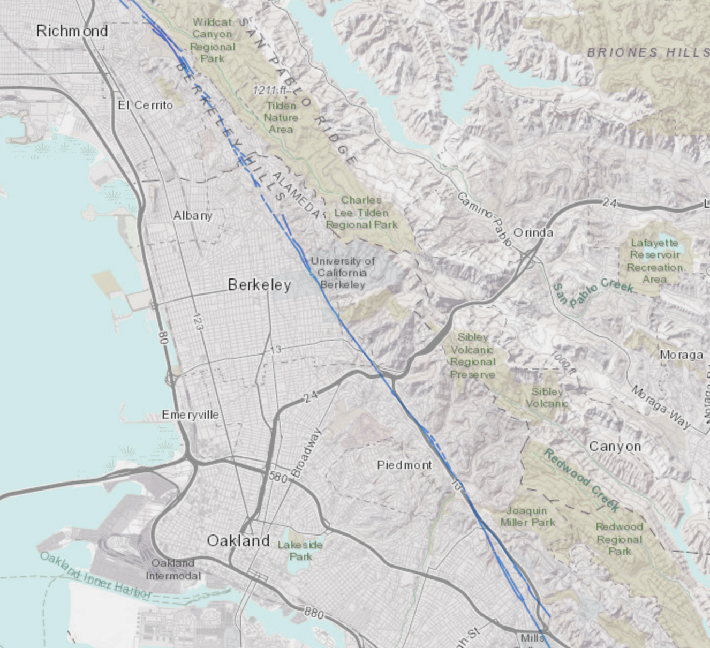
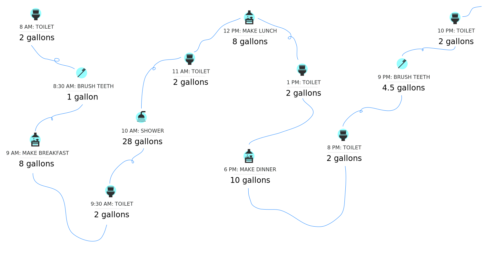

Following a disaster, such as an earthquake or wildfire, clean water may not be available. Your regular water source could be cut-off or compromised through contamination and may take longer than a week to recover, requiring you to ensure you have a supply of water in your home.

The Hayward fault line, shown in the image to the left, extends from San Jose
about 74 miles northward along the base of the East Bay Hills to
San Pablo Bay. Communities on or near the fault include San Jose,
Oakland, Fremont, Richmond, Berkeley, Hayward, San Leandro, San Lorenzo,
El Cerrito, Emeryville, Kensington and Milpitas. Given that the last major earthquake
was more than 150 years ago in 1868, scientists are convinced that
the Hayward Fault has reached the point where a powerful,
damaging earthquake can be expected at any time. USGS earthquake
science tells us that it’s now urgent to prepare for the next magnitude
7 quake on the Hayward Fault.
Source: U.S. Geological Survey (USGS)
To find out how close you live to a fault line, visit the link below.
Learn more
How long do you plan to live in the Bay Area? Round up to the nearest answer.
The East Bay Municipal Utilities District (EBMUD) provides high-quality drinking water for 1.4 million customers in the Alameda and Contra Costa counties. EBMUD has 4,100 miles of pipeline and 5 treatment plants. They have predicted almost 4,000 pipe breaks in the event of a 6.7 magnitude earthquake. Although EBMUD has completed an extensive Seismic Improvement program (SIP), there are still many vulnerabilities to earthquakes in the system.
EBMUD’s system is particularly vulnerable (compared to other Bay Area water utilities) because:
We engage in several activities each day that need water, from showering to cooking. In the event of an emergency, businesses and schools may be closed, requiring you to stay at home. The map below walks through a typical day with water for one person to show how many common activities require water.
According to the U.S. Geological Survey, the average person uses 80 gallons or more of water per day for indoor activities such as cooking, flushing the toilet, taking a shower or bath, washing hands, etc.
This estimate varies based on number of people in
household, type of faucets and plumbing systems, and other factors.
Please note that the water usage breakdown shown below is missing some
common activities such as cleaning, laundry, watering plants, etc.
How much water would you save in the event of an emergency to support your
everyday activities?
This calculator shows the hard choices that have to
be made living on the emergency water.
Start by selecting the total number of gallons per day you would save,
either for yourself or
for your household.
Next, tally your daily water usage by entering what you think is the least you need for each activity.
You may find that even your rock-bottom needs aren’t met and that you have to store more water, cut down your water needs, or do without.
Each cup represents one 8-oz glass of water. Each gallon is represented
16 cups, or 2 rows of cups.How many meals do you/your household have in a day? Each meal typically requires 2 cups of water.
How many 8-oz glasses of water do you/your household drink ing per day?
How many full body rinses do you/your household have in a day? Each rinse typically requires 6 cups of water.
How many toilet flushes do you/your household have in a day? Each flush typically requires 32 cups of water.
How many times do you/your household brush teeth, wash hands, and rinse face in a day? Each activity typically requires 3 cups of water.